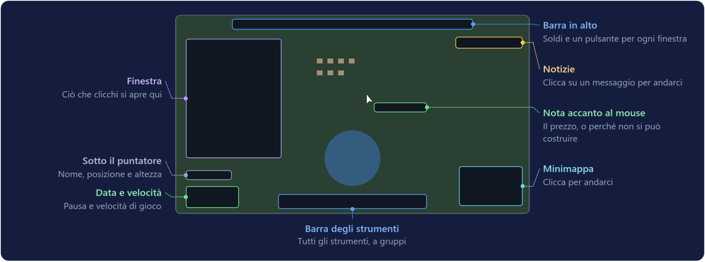

Lo schermo
Le barre, le finestre e la nota accanto al mouse.
Tutto è a portata di mano in tre punti: la barra in alto, la barra degli strumenti in basso e la nota che segue il mouse.


| Dove | Cosa fa |
|---|---|
| Barra in alto | La tua liquidità (cliccala per aprire Finanze) e un pulsante per ogni finestra. |
| Data e velocità | La data, nell'angolo in basso a sinistra, con la pausa e le velocità di gioco. |
| Barra degli strumenti | Ispeziona, Strade, Ferrovie, Porti, Terreno, Demolisci, Annulla e Veicolo. Scegliendo un gruppo si apre una fila con i suoi strumenti sopra la barra. |
| Minimappa | Il mondo intero nell'angolo. Cliccaci sopra per saltare in quel punto. |
| Notizie | I messaggi sulla tua compagnia compaiono man mano che succedono le cose. Clicca su uno per andare al luogo di cui parla; le notizie su obiettivi, sovvenzioni e richieste aprono Obiettivi. La finestra Notizie li conserva, e in Tutte le notizie vedi anche cosa fanno i rivali e le altre città. |
La nota accanto al mouse
- Prima di costruire mostra il prezzo di una casella di strada, binari, catenaria o ponte.
- Mentre trascini mostra il prezzo totale e cosa stai costruendo, in verde.
- Quando qualcosa non si può costruire diventa rossa e dice perché: un edificio in mezzo, terreno troppo ripido, soldi insufficienti o un consiglio comunale che dice di no.
Osservare le cose
- Con Ispeziona (1), clicca su un veicolo, una stazione, un'industria o un edificio per aprirne la finestra. Passa il puntatore su qualsiasi cosa per vedere cos'è.
- Con Ispeziona, ferma il puntatore un momento su una stazione, il nome di una città, un'industria, un veicolo o un edificio e accanto compare una scheda con i numeri chiave: il carico in attesa e le valutazioni, la popolazione e cosa pensa di te il consiglio, cosa ha prodotto un'industria e quanto è stato trasportato, il carico e il profitto di un veicolo. Nelle Impostazioni puoi disattivare le schede.
- Con uno strumento di costruzione in mano, l'angolo in basso a sinistra dice cosa c'è sotto il puntatore, con le coordinate e l'altezza.
- Quella finestra sta a sinistra. Cliccando su qualcos'altro viene sostituita, e una freccia nella barra del titolo torna a ciò che stavi guardando.
- Le schermate come Veicoli, Finanze o questa guida si aprono una alla volta: la nuova sostituisce la precedente, e premere di nuovo il tasto o il pulsante di una schermata la chiude.
- Premi la puntina di una finestra per tenerla aperta qualunque altra cosa apri. In Impostazioni c'è un interruttore per lasciare invece aperte tutte le finestre.
- Città e industrie hanno piccole icone dei carichi: vuote per ciò di cui hanno bisogno, piene per ciò che producono.
- Trascina una finestra dalla barra del titolo. Esc chiude quella in primo piano.
Elenchi di ciò che possiedi
- Veicoli (V) elenca la tua flotta con il profitto di ogni veicolo. Ordinala per Richiede attenzione per vedere prima quelli in difficoltà.
- Stazioni (Ctrl+S) elenca tutte le stazioni con ciò che vi è in attesa e le loro valutazioni.
- Linee (Ctrl+L) elenca le tue linee con le fermate, i veicoli e il profitto. Vedi Linee.
- Problemi (I, il segnale di avviso, con un numero) elenca tutto ciò che è bloccato o va storto, ognuno con il perché e un pulsante che lo risolve o ti ci porta.
- In queste liste clicca su una riga per aprirla, o sul suo pulsante mirino per vederla sulla mappa. In Problemi, un clic su una riga mostra il luogo e il pulsante accanto lo risolve.
- Obiettivi (J, la bandiera) raccoglie i tuoi primi passi, i tuoi traguardi, quanto è vicino l'obiettivo della tua compagnia e le sovvenzioni e richieste delle città in offerta. Vedi Obiettivi e traguardi.
Salvare
- F5 salva subito e F9 ricarica quel salvataggio.
- Il menu di gioco (Esc) salva con un nome a tua scelta e carica qualsiasi partita salvata.
- Il gioco salva anche da solo, ogni tre mesi se non lo cambi in Impostazioni.
Tutte le scorciatoie sono in Comandi.